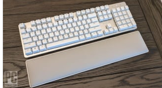
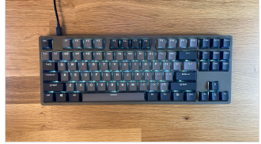
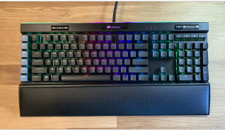
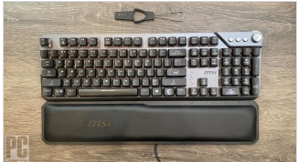
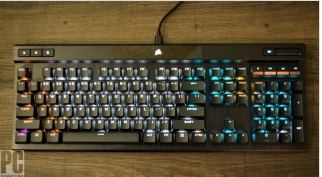
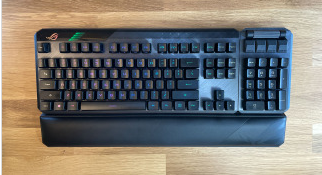
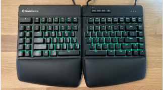
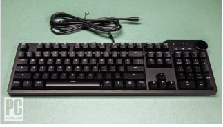
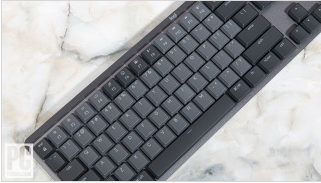
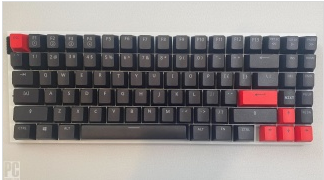

ShamPoo Electric Store

$159.99 - Razer Pro Type Ultra
You might recognize the Razer Pro Type Ultra if you’ve checked out our best keyboard roundup, but there’s no denying the Razer Pro Type Ultra is an excellent pick for mechanical keyboard users and enthusiasts. The keyboard’s white paint job looks gorgeous on just about any tabletop, and once you put it to use, you’ll quickly understand why it’s our top pick. Razer Yellow switches, the company's fastest and quietest, deliver a satisfying linear typing feel. Meanwhile, its sculpted soft-touch keys, hinged feet, and wrist rest provide ample comfort.

$199.99 - Drop ENTR Mechanical Keyboard
Who says you have to spend top dollar for a mechanical keyboard? Drop delivers one of our favorite mechanical keyboards for less than $100—and who can say no to that? A sleek, compact tenkeyless design complimented by Gateron Yellow key switches make the Drop ENTR the perfect entry-level mechanical keyboard for those looking to dip their fingertips into the key switch pool and see what the hype is all about.

$199.99 - Corsair K95 RGB Platinum XT
The RGB, the macros, the volume roller! The Corsair K95 RGB Platinum XT Gaming Keyboard is a mouthful of a name, but more important, it’s a monster of a board. Outfitted with a choice of classic Cherry MX key switches, the Corsair K95 RGB Platinum XT features a fantastic design and tons of great features, including Elgato Stream Deck support. Sure, you might not need all of these bells and whistles, but hardcore gamers and streamers will appreciate the K95’s bevy of functions.

$121.20 MSI Vigor GK71 Sonic Mechanical Keyboard
Just because you’re on a budget doesn’t mean you deserve to be condemned to the sparest of feature-deprived mechanical keyboards. There are plenty of diamonds in the rough in the keyboard market if you look (and by "rough," we mean roughly the $100 range). Making use of MSI’s own Sonic Red key switches, the GK71 keyboard provides a silent light touch, which feels great—especially when tapping the same key repeatedly. Aside from the excellent keys, the GK71 comes with a wrist rest.

$169.99 - Corsair K70 RGB Pro
The Corsair K70 shares a lot with the feature-rich K95 XT above, including its quality build and feature set. But what makes this keyboard a true "Pro" is its Cherry key switches (which come in MX Red, MX Blue, and MX Silver choices) and its tournament switch. The latter disables custom actions and macros to prevent accidental activation, changes the backlighting to a static single color to reduce distraction, and disables profiles or profile switching. All are features that are sure to put a smile on the faces of competitive players.

$227.18 - Asus ROG Claymore II Wireless Keyboard
Asus' revised wireless keyboard impresses us with its sharp design, detachable number pad, and RGB lighting. (The number pad, which can be repositioned on the left or right side of the board, makes this model a rare "ambidextrous" keyboard.) And with its 144 hours of battery life on a single charge, expect to get a lot of use out of this board before you reach for the included USB-C cord. With macros, volume rollers, Asus’ own brand of Cherry-like switches, and even a USB passthrough, the Asus ROG Claymore II has more than its fair share of conventional cool features, plus a few uncommon ones. Lefties, line up!

$199.00 - Kinesis Freestyle Edge RGB Split Gaming Keyboard
Ergonomics are important for any board, whether you’re gaming or working a spreadsheet, but the Kinesis Freestyle Edge is still one of our favorite mechanical keyboards thanks to its best-in-class ergonomics. I mean, look at the thing! Split the keyboard right down the middle for added comfort and even use the inverted optional lift kit to create an inverted-V, if you're into that kind of thing. It takes some time to get used to, for sure, but your hands and wrists will thank you once they get a load of the plush wrist rest and Cherry MX keys.

$199.00 - Das Keyboard 6 Professional
Sure, your office setup probably has a basic keyboard, but if you want to step up your productivity and comfort, the Das Keyboard 6 Professional is right for you. It uses classic components: This full-size board comes with your choice of high-quality, tactile Cherry Brown or Blue MX keys, and even has two USB-C ports for connecting additional peripherals. And while there’s no RGB backlighting, we imagine this won’t be too much of an issue in an office; you do get high-contrast, stark white key lighting.

$162.99 - Logitech MX Mechanical Keyboard
Mac users tend to look to Apple for their accessories, but they’ll quickly learn that there are plenty of premium alternatives like the Logitech MX Mechanical Keyboard. Its gray-on-gray aesthetic might not be the most exciting, but it’s an excellent keyboard with quiet keys, attractive backlighting, and, most important—software that is compatible with macOS, something that is still not as common as you’d imagine.

NZXT Function Mini TKL
The NZXT Function Mini TKL comes up on our list because it’s such a compact device. Packing all the features of a tenkeyless board into such a small form factor is impressive enough, but potential buyers will have access to NZXT’s customization service, which offers tons of different key switches, colors, and even color accents. It looks great, and it performs even better.